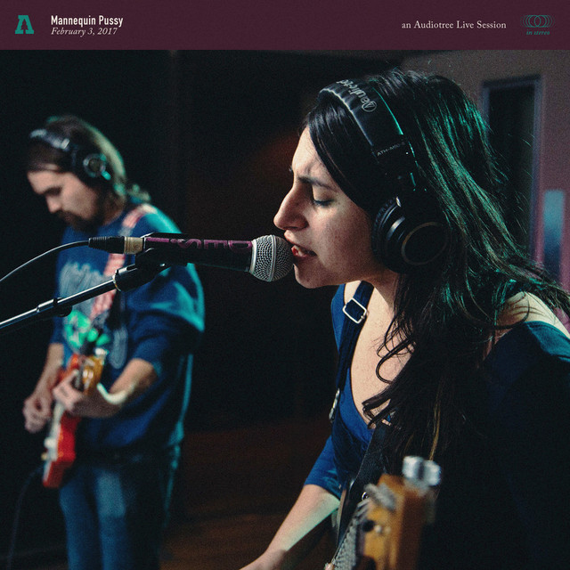

31 Days of Punk
The punk album for 12/30/2025 is:
Mannequin Pussy on Audiotree Live
by Mannequin Pussy
Ben's thoughts
For our final live album of the year we have selected an Audiotree live taping of the band Mannequin Pussy. Audiotree is a Chicago record label that famously produces great live recordings of up and coming independent bands. Mannequin Pussy, while forming in 2010, did not pick up speed till the release of their 2016 album Romantic. Their blend of riot-energy and old school style with new school ideas has shot them into punk valhalla. I personally fell in love with this band after the release of their 2024 album I Got Heaven, and while unfortunately this live album does not cover any of those tracks, I think you all will be pleasantly surprised with the product.
Off the bat you get a great feel for this band's aesthetic in their opener “Romantic” which just fully sends their hardcore influence into the mic. In fact, throughout the album you hear the curdles of Missy Dabice stab in songs like “Ten” and “Everything.” For the modern punk fan this album is nothing but completely satisfying. Their music around that time generally fell around the love category, where aching heart break and shattering betrayal entangled their lyrics. This of course was the main theme of their 2016 LP. I am thoroughly impressed with this band's ability to pack in such distinction between their range of tone and dynamics within these tracks. Whispers and bright guitar quickly shift into effortful strumming and belting. A separate shoutout goes towards their world class drummer Kaleen Reading, who dictates this album almost effortlessly with incredible percussion.
Of the rock bands you can be following right now, Mannequin Pussy should be topping the list. Their sound is just about completely their own, and they are not stopping the crazy train anytime soon. Kudos to these cats at both Audiotree and Mannequin Pussy for publishing such a great recording. It only makes me more eager to see this band in person.
Connor's thoughts
Audiotree live functions similar to that of NPR’s tiny desk (or frankly any public broadcast studio), and has hosted many incredible artists over the years. These performances often allow musicians a better oppurtunity to show off their musical talent, focusing less on the grand performance and more on their raw ability, to which the four members of the legendary Mannequin Pussy use to their advantage.
As I stated before, these live recordings often don’t show the full scope of the band, given they don’t have the same production value nor live audience to perform for as they would a festival or venue. However, Mannequin Pussy being the Philadelphia badasses they are, are able to encapsulate their infamous live energy onto a platform not necessarily built for it. It’s prominent in the sweet tones of their guitars and the roaring screams of Marisa “Milly” Dabice as they perform a ten track session filled with fan favorites like “Romantic” and “Kiss”. Now, putting this performance aside, Mannequin Pussy is a rising star in the punk genre, blending their alternative style with an incredible vocal range that spans from a whisper to a scream, all while putting on one of the best acts of modern day rock. As the New York Times said, they specialize in “Confrontational” punk, pulling no punches when it comes to their stance on political and sexual freedom along with many other subjects. Overall, the band is a unique act that transcends the expectations of modern punk, and that very trait is what makes them so punk.
I am so happy we decided to do this performance. Just as I talked about yesterday, I love live performances as they produce raw vocals that studio recordings often don't capture due to their "perfections". As well, Benjamin and I really like the intimate nature of this as you commonly see with public broadcast channels like NPR. As a product of that environment, every track is almost amplified, and with no distractions from the crowd, they really just let loose without interruption. In short, their short 10 track performance brings the raw energy of their high octane style, and I thoroughly enjoyed every second of it.
Go give Mannequin Pussy’s Audiotree live performance a listen, and experience what modern punk is all about, that being fresh, interesting, and of course, rebellious as all hell.
Listen on Spotify: